건축기사 (2006-03-05 기출문제)
1과목: 건축계획
1. 다음의 미술관의 각종 평면형식에 대한 설명 중 옳지 않은 것은?(문제 오류로 실제 시험장에서는 1, 2번이 정답 처리 되었습니다. 여기서는 1번을 누르면 정답처리됩니다.)
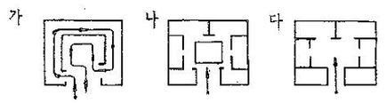
- "가"의 경우는 소규모의 전시실에 이용이 불가능하며 대규모의 전시실에 적합하다.
- "나"의 경우는 필요시 자유로이 각 실을 독립적으로 폐쇄할 수 있다.
- "다"의 경우는 확장 및 전시실의 융통성 있는 선택적 사용이 가능하다.
- ‘나’, ‘다’의 경우는 각 실에 직접 들어갈 수 있는 점이 유리하다.
(정답률: 75%)

2. 다음 중 병원건축에 있어서 단일 고층건물형식의 유리한 점이 아닌 것은?
- 각 병실을 남향으로 할 수 있어 일조 및 통풍 조건이 좋아진다.
- 업무의 효율화가 가능하다.
- 낮은 건폐율로 주변 공지 확보에 유리하다.
- 병동의 관리가 용이하다.
(정답률: 57%)
3. 상점건축의 매장 가구의 배치계획에서 고려할 사항으로 부적당한 것은?
- 고객 쪽에서 상품이 효과적으로 보이게 한다.
- 들어오는 고객과 직원의 시선이 바로 마주치는 것을 피하도록 한다.
- 감시하기 쉽고 또한 고객에게 감시받고 있다는 인상을 주어 미연에 도난을 방지 하도록 한다.
- 고객과 직원의 동선이 원활하고, 소수의 직원으로 다수의 고객을 수용할 수 있어야 한다.
(정답률: 72%)
4. 다음 호텔의 종류 중 연면적에 대한 숙박 관계부분의 비율이 가장 높은 것은?
- 레지덴셜 호텔
- 리조트 호텔
- 커머셜 호텔
- 클럽 하우스
(정답률: 67%)
5. 다음 중 현존하는 한국 고대 석탑으로 가장 오래된 것은?
- 미륵사지 석탑
- 경천사지 석탑
- 원각사지 석탑
- 불국사 다보탑
(정답률: 45%)
6. 다음 중 구조코어로서 가장 바람직한 코어형식으로, 바닥면적이 큰 고층, 초고층사무소에 적합한 것은?
- 중심 코어형
- 편심 코어형
- 독립 코어형
- 양단 코어형
(정답률: 80%)
7. 학교운용방식에 관한 기술 중 옳지 않은 것은?
- 종합교실형(A)은 교실수와 학급수가 일치하며, 초등학교 고학년 이상에 적당한 방식이다.
- 교과교실형(V)은 모든 교실이 특정 교과 때문에 만들어 지며, 일반교실은 없다.
- 플라톤형(P)은 각 학급을 2분단(일반교실, 특별교실)으로 나누어 운영하는 방식으로, 충분한 교사수와 적당한 시설을 요구하고 있다.
- 달톤형(D)은 학급과 학년을 없애고 학생들의 능력에 따라 교과목을 선택하는 방식이다.
(정답률: 66%)
8. 르네상스 교화 건축양식의 특징으로 옳은 것은?
- 수평을 강조하며 정사각형, 원 등을 사용하여 유심적 공간구성을 하였다.
- 직사각형의 평면구성으로 볼트구조의 지붕을 구성하며 종탑을 설치하였다.
- 로마네스크 건축의 반원아치를 발전시킨 첨두형 아치를 주로 사용하였다.
- 타원형 등 곡선평면을 사용하여 동적이고 극적인 공간 연출을 하였다.
(정답률: 29%)
9. 도서관의 출납시스템 중 폐가식에 대한 설명으로 틀린 것은?
- 서고와 열람실이 분리되어 있다.
- 규모가 큰 도서관의 독립된 서고의 경우에 많이 채용된다.
- 도서의 유지 관리가 좋아 책의 망실이 적다.
- 대출절차가 간단하여 관원의 작업량이 적다.
(정답률: 63%)
10. 다음의 극장에 관한 용어의 설명 중 옳지 않은 것은?
- 그린 룸(green room) - 배경제작실로 위치는 무대에 가까울수록 편리하다.
- 앤티 룸(anti room) - 출연자들이 출연 바로 직전에 대기하는 공간이다.
- 플라이 갤러리(fly gallery) - 무대 주위의 벽에 6-9m 높이로 설치되는 좁은 통로이다.
- 프롬프터 박스(prompter box) –객석 쪽에서 보이지 않게 설치된 대사를 불러 주는 곳이다.
(정답률: 62%)
11. 아파트의 단면형식 중 복층형에 대한 설명으로 옳지 않은 것은?
- 통로면적이 증가하며 유효면적은 감소한다.
- 주호내에 계단을 두어야 하므로 소규모 주택에서는 비경제적이다.
- 거주성, 특히 프라이버시가 높다.
- 공용 복도가 없는 층은 화재 및 위험시 대피상 불리하다.
(정답률: 62%)
12. 우리나라 전통의 한식주택에서 문꼴부분의 면적이 큰 이유로 가장 적합한 것은?
- 출입하는데 편리하게 하기 위해서
- 하기의 고온다습을 견디기 위해서
- 동기에 일조효과를 충분히 얻기 위해서
- 겨울의 방한을 위해서
(정답률: 69%)
13. 다음의 사무소 건축의 코어에 대한 설명 중 계획원론적인 입장에서 볼 때 가장 적절치 않은 것은?
- 계단과 엘리베이터, 화장실은 가증한 접근 시킬 것.
- 코어내의 공간과 임대사무실 사이의 동선이 간단할 것
- 코어내의 각 곡간이 각 층마다 공통의 위치에 있을 것
- 피난용 특별계단 상호간의 법정거리 내에서 가급적 가까울 것.
(정답률: 51%)
14. 지하 2층, 지상 10층의 임대사무소를 계획할 때 다음 사항들 중 일반적으로 가장 부적당한 것은?
- 임대면적은 약 13,000m2로 계산한다.
- 엘리베이터는 약 6대를 설치한다.
- 건물의 높이는 40m 정도 이다.
- 2층 이상의 임대사무소에 수용되는 인원은 3,000∼3,500명으로 본다.
(정답률: 23%)
15. 다음 중 여름철 단층주택에서 서쪽창에 들어오는 일사를 방지하기 위한 방법으로 가장 적합하지 않은 것은?
- 처마 길이를 크게 한다.
- 창밖에 낙엽수를 심는다.
- 창에 수직루버를 설치한다.
- 처마 끝에 발을 매단다.
(정답률: 28%)
16. 다음 중 르 꼬르뷔제(Le Corbuiser)의 건축5대 원칙이 아닌 것은?
- 필로티
- 모듈러
- 자유로운 평면
- 골조와 벽의 기능적 독립
(정답률: 48%)
17. 다음의 극장의 가시거리에 대한 설명에서 ( ) 안에 들어갈 말로 알맞은 것은?
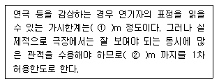
- ① 22, ② 35
- ① 22, ② 38
- ① 15, ② 22
- ① 20, ② 35
(정답률: 79%)
18. 종합병원 건축계획에 대한 설명 중 옳지 않은 것은? (문제 오류로 실제 시험에서는 가,다번이 정답처리 되었습니다. 여기서는 가번을 누르면 정답 처리 됩니다.)
- 우리나라의 일반적인 외래진료방식은 오픈 시스템이며 대규모의 각종 과를 필요로 한다.
- 1개의 간호사 대기소에서 관리할 수 있는 병상수는 30∼40개 이하로 한다.
- 병실의 창문 높이는 90㎝ 이하로 하여 환자가 병상에서 외부를 전망할 수 있게 하는 것이 좋다.
- 수술실의 바닥마감은 전기도체성 마감을 사용하는 것이 좋다.
(정답률: 71%)
19. 은행 건축 계획에 관한 설명 중 부적당한 것은?
- 일반적으로 출입문은 도난방지상 안여닫이로 함이 타당하다.
- 어린이들의 출입이 많은 곳에서는 회전문을 설치하는 것이 좋다.
- 고객이 지나는 동선은 되도록 짧게 한다.
- 고객의 공간과 업무공간과의 사이에는 원칙적으로 구분이 있어야 한다.
(정답률: 74%)
20. 학교건축의 세부계획에 대한 설명 중 가장 부적당한 것은?
- 미술실은 반드시 북측 채광을 고집할 필요는 없고 고른 조도를 얻을 수 있으면 된다.
- 초등학교 강당의 학생 1인당 소요면적은 0.4m2 정도이다.
- 시청각관계 제실은 일반교실, 특별교실 등에 가까운 것이 좋으며 관리부문과도 인접하여 배치한다.
- 체육관은 배구코트를 둘 수 있는 크기가 필요하며, 그러기 위해서는 최소 300m2의 면적이 요구된다.
(정답률: 67%)
2과목: 건축시공
21. 철골기둥에서 세장한 기둥의 단면계산에 있어 세장비에 따라 그 허용응력도가 달라지는 것은 다음 현상 중 어느 것에 해당되는가?
- 처짐현상
- 진동현상
- 전단현상
- 좌굴현상
(정답률: 57%)
22. 공사계약 방식에는 전통적인 계약방식과 업무범위에 따른 계약방식이 있는데 다음 중 업무범위에 따른 계약방식의 종류가 아는 것은?
- 공동도급 계약방식(Joint Venture Contract)
- 턴키 계약방식(Turn-Key Contract)
- 공사 관리계약 방식(Construction Management Contract)
- 프로젝트 관리 계약 방식(Program Management or Project Management Contract)
(정답률: 46%)
23. 콘크리트의 측압에 영향을 주는 요소들을 열거한 내용 중 옳지 않은 것은?
- 거푸집의 강성이 작을수록 측압이 크다.
- 콘크리트의 타설 속도가 빠를수록 측압이 크다.
- 콘크리트의 비중이 클수록 측압이 크다.
- 거푸집의 수평단면이 클수록 측압이 크다.
(정답률: 27%)
24. 실링공사의 재료에 관한 기술 중 옳지 않은 것은?
- 가스켓은 콘크리트의 균열부위를 충전하기 위하여 사용하는 부정형 재료이다.
- 프라이머는 접착면과 실링재와의 접착성을 좋게 하기 위하여 도포하는 바탕처리 재료이다.
- 백업재는 소정의 줄눈깊이를 확보하기 위하여 줄눈속을 채우는 재료이다.
- 마스킹테이프는 시공중에 실링재 충전개소 이외의 오염방지와 줄눈선을 깨끗이 마무리하기 위한 보호 테이프 이다.
(정답률: 55%)
25. 콘크리트 양생에 관한 설명으로 옳지 않은 것은?
- 콘크리트의 경화에 충분한 물이 필요하다.
- 양생은 특히 초기가 중요하며 강도에 영향이 적다
- 온도를 유지하는 방법으로 가열한다.
- 수분유지를 위해 피복을 한다.
(정답률: 35%)
26. 다음 철골공사에 관한 설명 중 틀린 것은 어느 것 인가?
- 리벳치기에서 리벳은 900∼1,000℃로 가열한 것을 사용하고, 600℃ 이하로 냉각된 것은 사용할 수 없다.
- 녹막이도장은 작업장소의 온도가 5℃이하, 또는 상대습도가 80% 이상일 때는 작업을 중지한다.
- 철골이 콘크리트에 묻히는 부분은 특히 녹막이 칠을 잘 해야 한다.
- 볼트 접함은 일반적으로 처마높이 9m 이하이고 스팬이 13m 이하의 건축물에서 사용한다.
(정답률: 54%)
27. 건축공사는 시공 전에 수립하는 시공계획이 공사의 성패를 좌우한다 할 수 있다. 다음 중 시공 계획의 원칙이라 할 수 없는 항목은?
- 작업량을 최소화 한다.
- 각 작업 또는 설비는 가능한 한 장기간 균일한 작업량을 할 수 있게 한다.
- 기계설비에 다소 비용을 요해도 인건비를 절감하는 방안을 모색한다.
- 설비의 공비시간(公費時間)을 크게 한다.
(정답률: 48%)
28. 다음 중 열가소성수지는?
- 페놀수지
- 요소수지
- 멜라민수지
- 염회비닐수지
(정답률: 57%)
29. 철골재의 수량산출에서 도면 정미수량에 가산할 할증율로서 부적당한 것은?
- 경량형강 : 10%
- 강판 : 10%
- 봉강 : 5%
- 각 파이프 : 5%
(정답률: 57%)
30. 웰포인트공법에 관한 내용으로 옳지 않은 것은?
- 출수가 많은 깊은 터파기에 있어 지하수 배수공법의 일종이다.
- 흙막이 공사가 간단히 된다.
- 수분이 많은 점토질 지반에 적당한 공법 이다.
- 지내력이 증가한다.
(정답률: 60%)
31. 각 부재에 대한 콘크리트량의 산출방법으로 옳지 않은 것은?
- 기둥 : 기둥단면적×층높이
- 계단 : 길이×평균두께×계단폭
- 보 : 보폭×바닥판 두께를 빼 보 춤×내부유효길이
- 연속기초 : 단면적×중심연장길이
(정답률: 48%)
32. 콘크리트의 배합강도 210㎏/cm2, 시멘트의 28일 압축강도 350㎏/cm2일 때 물시멘트비로 가장 옳은 것은? (단, 사용 시멘트는 보통 포틀랜드 시멘트 임)
- 60%
- 63%
- 65%
- 67%
(정답률: 23%)
33. 건축공사 중 커튼월공사에 관한 다음 내용 중 옳지 않은 것은?
- 커튼월을 구조체에 설치할 때는 비계작업을 원칙으로 한다.
- 공사의 상당부분을 공장제작하므로 현장공정을 크게 단축시키는 것이 가능하다.
- 제조공정의 경우 전체 공정계획을 고려하여 출하계획 작성함으로써 작업중단이 생기지 않고 적시생산이 되도록 유도한다.
- 커튼월 부재의 긴결방식은 슬라이드 방식, 회전방식, 고정 방식 등이 있다.
(정답률: 54%)
34. 배합비 1 : 2 : 4로 콘크리트 1m3를 만드는데 소요되는 모래와 자갈 량으로 적당한 것은?
- 모래 0.40m3, 자갈 0.8m3
- 모래 0.45m3, 자갈 0.9m3
- 모래 0.50m3, 자갈 1.0m3
- 모래 0.55m3, 자갈 1.1m3
(정답률: 40%)
35. 도장 공사에 관한 주의사항으로 옳지 않은 것은?
- 바탕의 건조가 불충분하거나 공기의 습도가 높을 때에는 시공하지 않는다.
- 초벌부터 정벌까지 같은 색으로 시공해야 한다.
- 야간에는 색을 잘못 도장할 염려가 있으므로 시공하지 않는다.
- 직사광산은 가급적 피하고 도막이 손상될 우려가 있을 때에는 도장하지 않는다.
(정답률: 74%)
36. 입찰에 관한 설명 중 옳은 것은?
- 일반 공개입찰은 입찰자가 많으므로 담합의 우려가 많다.
- 지명경쟁입찰은 입찰자가 한정되므로 부적격자에게 낙찰될 우려가 많다.
- 특명입찰은 수의계약이라고도 하며 공사비가 증가 될 우려가 있다.
- 현장설명은 보통 응찰과 동시에 이루어진다.
(정답률: 43%)
37. 문 윗틀과 문짝에 설치하여 문이 자동적으로 닫혀지게 하며, 기계장치가 있어 개폐 속도를 조정할 수 있는 장치는?
- 도어체크(Door check)
- 도어홀더(Door holder)
- 피보트 힌지(Pivot hinge)
- 체인 록(Chain lock)
(정답률: 68%)
38. 철골부재 접합용접의 용어와 그 설명이 틀린 것은?
- 슬래그 감싸들기 - 용접봉의 피복재 심선과 모재가 변하여 생긴 화분이 용착금속 내에 혼입되는 것
- 오버랩 - 용접금속과 모재가 융합되지 않고 겹쳐지는 것
- 위핑 - 용접봉의 운봉을 용접방향에 대하여 가로로 왔다갔다 움직여 용착금속을 녹여 붙이는 것
- 공기구멍 및 선상조직-용접상부에 따라 모재가 녹아 용착금속이 채워지지 않고 홈으로 남게 된 부분
(정답률: 47%)
39. 다음 중 지하연속벽 공법의 특징으로 맞는 것은?
- 인접건물의 경계선까지 시공이 불가능하다.
- 흙막이벽은 벽의 길이에 제한이 있다.
- 시공시의 소음ㆍ진동이 크다
- 흙막이벽은 깊은 지층까지 조성할 수 있다.
(정답률: 35%)
40. 굳지 않은 콘크리트의 작업성(Workability)에 영향을 미치는 요인에 대한 설명으로 옳은 것은?
- 단위수량의 증가와 워커빌리티의 향상은 비례적이다.
- 빈배합이 부배합보다 워커빌리티가 좋다.
- 깬 자갈의 사용은 워커빌리티를 개선한다.
- 제에 의해 연행된 공기포는 워커빌리티를 개선한다.
(정답률: 30%)
3과목: 건축구조
41. 철근콘크리트조의 피복두께에 대한 설명으로 틀린 것은?
- 피복두께는 내화, 내구성 및 부착력을 고려하여 정하는 것이다.
- 강도설계법에서 옥외의 공기나 흙에 직접 접하지 않는 현장치기 콘크리트 보나 기둥인 경우 최소 피복두께는 40㎜이다.
- 철근크리트보의 피복두께는 주근의 중심과 이를 피복하는 콘크리트의 표면까지의 최단 거리이다.
- 동일한 부재의 단면에서 피복두께가 클수록 구조적으로 불리하다.
(정답률: 33%)
42. 다음의 목재의 이음 중 중요부 가로재의 내이음으로 사용되며 구부림(휨)에 가장 유리한 것은?
- 빗이음
- 턱솔이음
- 반턱이음
- 엇걸이이음
(정답률: 47%)
43. 다음 중 부동침하를 방지하기 위한 대책과 가장 관계가 먼 것은?
- 구조물의 하중을 기초에 균등하게 분포 시킨다.
- 필요시 복합기초를 사용한다.
- 기초상호간을 지중보로 연결한다.
- 건물의 길이를 길게 한다.
(정답률: 70%)
44. 다음의 조적조 벽체에 대한 설명 중 옳은 것은?
- 벽 길이는 20이하로 하고, 20이상으로 할 때에는 중간에 기둥을 만들어 보강하거나 벽 두께를 증가시킨다.
- 각 층의 대린벽으로 구획된 벽에서는 문꼴의 나비의 합계는 그 벽길이의 1/2이상으로 한다.
- 벽두께는 벽높이의 1/25이상이 되도록 한다.
- 내력벽으로 둘러쌓인 부분의 바닥면적은 80m2 이하로 한다.
(정답률: 42%)
45. 조적구조에서 테두리보(wall girder)에 대한 설명으로 부적당한 것은?
- 철근콘크리트바닥판으로 할 때에는 테두리보를 따로 쓰지 않아도 좋다.
- 분산된 벽체를 일체로 연결하여 하중을 균등히 분포시킨다.
- 수직하중에 저항하는 보강역할을 하며 횡력에는 저항하지 못한다.
- 집중하중을 받는 블록의 취약부를 보강한다.
(정답률: 37%)
46. 목제문 중 문짝을 상하문틀에 홈파끼우고, 옆벽에 문짝을 몰아붙이거나 이중벽 중간에 몰아넣는 식의 문은?
- 여닫이문
- 접문
- 미닫이문
- 미서기문
(정답률: 40%)
47. 철근콘크리트의 단근보를 강도설계법으로 설계시 콘크리트가 받는 압축력으로 옳은 것은? (단, fck=27MPa, 보의 폭 300㎜ 응력블록의 깊이 a=120㎜)
- 750kN
- 782kN
- 826kN
- 850kN
(정답률: 31%)
48. 그림에서 축에 대한 단면2차 모멘트로 옳은 것은?
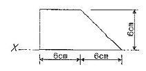
- 220 ㎝
- 244 ㎝
- 440 ㎝
- 540 ㎝
(정답률: 32%)
49. 그림과 같은 단순보에서 최대 휨응력은?
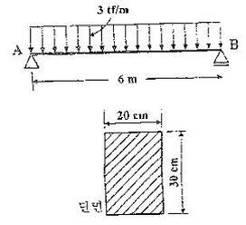
- 300 ㎏f/cm2
- 350 ㎏f/cm2
- 400 ㎏f/cm2
- 450 ㎏f/cm2
(정답률: 32%)
50. 다음과 같은 트러스에서 부재력이 0이 되는 부재수는?
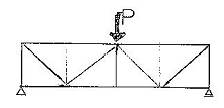
- 2개
- 3개
- 4개
- 5개
(정답률: 24%)
51. 그림과 같은 단순보에서 최대 전단응력은 얼마인가?
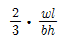
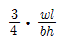
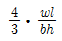
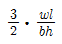
(정답률: 20%)
52. 지름이 2.1㎝인 강봉에 3tf의 인장력을 작용시켰더니, 길이가 3m에서 3.006m로 늘어났다. 변형률은?
- 0.001
- 0.002
- 0.006
- 0.028
(정답률: 42%)
53. 표준갈고리를 갖는 D22의 인장철근 (공칭지름db=22.2㎜)의 기본정착길이는? (단, fck=21MPa, fy = 400MPa)
- 100.5㎜
- 153.2㎜
- 484㎜
- 1162.6㎜
(정답률: 41%)
54. 고정하중이 50MPa 이고 활하중이 30MPa인 경우 극한강도설계법으로 슬래브를 설계할 때 사용하는 계수하중은?
- 111MPa
- 115MPa
- 121MPa
- 129MPa
(정답률: 18%)
55. 다음의 각종 벽체에 관한 기술 중 옳지 못한 것은?
- 목구조 벽체에 가새를 대는 것은 수평력을 부담시키기 위해서이다.
- 벽돌벽에 배관ㆍ배선, 기타용으로 그 층높이의 3/4이상 연속되는 세로홈을 팔 때에는 그 홈의 깊이는 벽두께의 1/3이하로 한다.
- 보강콘크리트블록조의 내력벽의 벽량은 15㎝/m2이상으로 한다.
- 조적조에서 창문의 나비가 1.2m이상인 문꼴의 상부에는 철근콘크리트 인방보를 반드시 설치해야 한다.
(정답률: 33%)
56. 목재로 미서기문을 만들 때 윗문틀의 적당한 문짝홈의 깊이는?
- 5㎜
- 10㎜
- 15㎜
- 20㎜
(정답률: 30%)
57. 강도설계법에서 1방향 슬래브 설계시 휨철근에 직각방향으로 배근되는 D10철근의 최대간격으로 옳은 것은? (단, 슬래브 두께는 150㎜, fy = 400MPa, 철근(D10) 1개의 단면적은 71mm2이다.)
- 200㎜
- 230㎜
- 260㎜
- 300㎜
(정답률: 24%)
58. 그림과 같은 캔틸레버에서 B점의 처짐은?
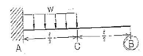
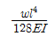
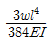
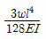
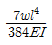
(정답률: 39%)
59. 다음의 고력볼트접합에 대한 설명 중 옳지 않은 것은?
- 접합부의 강성이 높아 수직방향 접합부의 변형이 거의 없다.
- 접합판재 유효단면에서 하중이 적게 전달된다.
- 볼트의 단위 강도가 높아 큰 응력을 받는 접합부에 적당하다.
- 마찰접합이므로 볼트나 판재에 전단 또는 지압응력이 발생한다.
(정답률: 23%)
60. 강도설계법에서 단철근 직사각형 보의 단면이 b = 300㎜, d = 500㎜일 때, 균형철근비는? (단, fck = 21MPa, fy = 400MPa이다.)
- 0.0124
- 0.0228
- 0.0332
- 0.0435
(정답률: 52%)
4과목: 건축설비
61. 건구온도가 26[°C]인 실내공기 8,000[m3/hr]와 건구온도가 32[℃]인 외부공기 2,000[m3/hr]을 혼합하였을 때 혼합공기의 건구온도는 몇 [°C]인가?
- 27.2
- 27.6
- 28.0
- 29.0
(정답률: 48%)
62. 다음의 소방시설에 관한 설명 중 옳은 것은?
- 옥내소화전의 방수압력은 1.7kg/mm2이상이 고, 방수량은 130L/min이하이다.
- 옥외소화전의 방수압력은 2.5kg/cm2이상이 고, 방수량은 300L/min이상이다.
- 스프링클러 헤드 1개의 방수량은 50L/min 이상이다.
- 드렌쳐 설비 헤드 1개의 방수압력은 1kg/cm2이상이다
(정답률: 25%)
63. 냉방부하 중 현열부하로만 작용하는 것은?
- 인체부하
- 조명기구부하
- 틈새바람에 의한 부하
- 환기부하
(정답률: 51%)
64. 연면적이 10,000m2인 사무소 건물의 급수량을 구하여 옥상 탱크의 용량을 결정하고자 한다. 1시간 최대 사용수량을 옥상탱크용량으로 결정할 경우 가장 적당한 것은? (단, 유효면적비 56%, 유효면적당 거주인원 0.2인/m2, 1인 1일당 급수량 100L, 건물의 사용시간은 10시간으로 한다.)
- 10m3
- 20m3
- 30m3
- 40m3
(정답률: 28%)
65. 엘리베이터의 안전 장치에 관한 설명으로 맞는 것은?
- 전동기가 회전을 정지하였을 경우 스프링 의 힘으로 브레이크드럼을 눌러 엘리베이터를 정지시켜 주는 장치는 전자 브레이크(magnetic brake)이다.
- 사고 발생시 층 사이에서 카(car)내의 승객이 카 밖으로 나가려고 할 경우 승강로의 벽과 카사이의 공간으로 승객이 추락하는 것을 방지하기 위한 장치는 조속기(governor) 이다.
- 리미트 스위치에 의한 조속기의 동작에 의하여 비상시 엘리베이터를 안전하게 정지시키도록 하는 장치로 가이드 레일을 움켜잡아 정지시키는 장치는 역 ㆍ 결상 릴레이 이다.
- 카(car)가 최상층이나 최하층에서 정상 위치를 벗어나 그 이상으로 운행하는 것을 방지하는 안전장치는 끼임 방지장치(safety shoe)이다.
(정답률: 59%)
66. 간선설계 순서로서 옳은 것은?
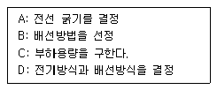
- A-B-C-D
- C-D-B-A
- B-A-D-C
- D-B-A-C
(정답률: 52%)
67. 급배수설비에 관한 기술 중 부적당한 것은?
- 우수수직관은 오수 배수관 및 통기관과 겸용 또는 접속하는 것이 바람직하다.
- 배수수직관의 관경은 최하부부터 최상부까지 동일하게 한다.
- 배수재이용수의 배관은 외관상 다른 배관과 구별되도록 한다.
- 고가탱크는 건축물 최고위치의 밸브와 소요기구의 필요수압을 확보할 수 있는 높이에 설치한다.
(정답률: 58%)
68. 공기조화설비계획에서 공조방식을 통한 에너지절약 사항이 아닌 것은?
- 전열교환기에 의한 배열회수를 적극적으로 적용한다.
- 각 존별로 온도제어를 한다.
- 열원기기 등은 고효율 운전이 가능한 것을 선정한다.
- 구조 체에 단열재를 삽입하고 창유리를 복층화한다.
(정답률: 23%)
69. 수, 변전설비의 주요기기가 아닌 것은?
- 차단기
- 에어 필터
- 콘덴서
- 변압기
(정답률: 42%)
70. 3 ∼ 8대의 엘리베이터가 서로 연락하며 빌딩내 교통수요 변동에 대응하는 효율적인 수송을 하는 엘리베이터 조작방식은?
- 단식 자동방식
- 승합전자동방식
- 군승합 방식
- 전자동 군관리방식
(정답률: 53%)
71. 어느 실에 필요한 조명기구의 개수를 구하고자 한다. 그 실의 바닥면적을 A, 평균조도를 E, 조명률 을U, 보수율을 M, 기구 1개의 광속(光束)을 F라고 할 때 조명기구 개수의 적절한 산정식은?
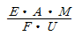
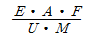
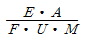
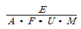
(정답률: 47%)
72. 조명 단위에 대한 조합 중 틀린 것은?
- 광속 - [lm]
- 조도 - [lx]
- 휘도 - [sb]
- 광도 - [cd/m2]
(정답률: 37%)
73. 다음 중 중수도의 용도와 가장 관계가 먼 것은?
- 수세식 변소용수
- 조경용수
- 살수용수
- 주방용수
(정답률: 37%)
74. 다음 중 트랩의 봉수 파괴 원인이 아닌 것은?
- 자기 사이펀 작용
- 유도 사이펀 작용
- 증발현상
- 자정작용
(정답률: 61%)
75. 위험물저장 및 처리시설의 피뢰침 보호각의 기준은 몇 도인가?
- 30°
- 45°
- 60°
- 90°
(정답률: 47%)
76. 습공기의 건구온도와 습구온도를 알 때 습공기선도를 사용하여 구할 수 있는 것이 아닌 것은?
- 습공기의 엔탈피
- 습공기의 상대습도
- 습공기의 기류
- 습공기의 절대습도
(정답률: 54%)
77. 위생도기 재질로서 법량철기의 특성을 잘못 설명한 것은?
- 표면이 매끄럽고 더러움을 잘 타지 않는다.
- 히트 쇽크(Heat Shock)를 일으키기 쉬우며, 또한 백화 현상도 일으킬 수 있다.
- 충격에 강하고 복잡한 형상의 제작이 용이하다.
- 흡수성이 없어서 오수를 흡수하지 않는다.
(정답률: 26%)
78. 비상콘센트는 몇 층 이상의 건물에 설치하여야 하는가?
- 5층
- 9층
- 10층
- 11층
(정답률: 37%)
79. 다음 표와 같은 벽체의 열관류율은 약 얼마인가? (단, 내표면 열전달율은 7.2kcal/m2h°C, 외표면 열전달율은 28.8kcal/m2h°C)
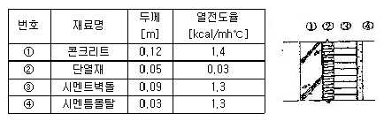
- 0.322kcal/m2h°C
- 0.495kcal/m2h°C
- 0.525kcal/m2h°C
- 0.783kcal/m2h°C
(정답률: 24%)
80. 압축식 냉동기의 주요 구소요소가 아닌 것은?
- 재생기
- 압축기
- 증발기
- 응축기
(정답률: 61%)
5과목: 건축법규
81. 다음의 건축물에 대한 건축허가를 신청할 때에는 당해 건축물에 대한 에너지 절약계획서를 제출하여야 하는 기준으로 옳지 않은 것은?(관련 규정 개정전 문제로 여기서는 기존 정답인 4번을 누르면 정답 처리됩니다. 자세한 내용은 해설을 참고하세요.)
- 당해 용도에 사용되는 바닥면적의 합계가 3,000m2 이상인 업무시설
- 당해 용도에 사용되는 바닥면적의 합계가 2,000m2 이상인 공동주택 중 기숙사
- 당해 용도에 사용되는 바닥면적의 합계가 500m2 이상인 제1종 근린생활시설 중 일반 목욕장
- 40세대 이상으로서 중앙집중 난방방식인 공동주택
(정답률: 55%)
82. 도로의 너비가 각각 7미터이고 그 교차 각이 90도인 도로모퉁이에 위치한 대지의 도로 모퉁이 부분의 건축선은 대지에 접한 도로 경계선의 교차점으로부터 도로경계선을 따라 각각 얼마를 후퇴하여야 하는가?
- 후퇴하지 않는다
- 2미터
- 3미터
- 4미터
(정답률: 40%)
83. 다음 중 건축법상의 도로로 볼 수 없는 것은?
- 도로법에 의한 고속도로
- 사도법에 의하여 신석 또는 변경에 관한 고시가 된 도로
- 국토의 계획 및 이용에 관한 법률에서 신설에 관한 고시가 된 도로
- 건축허가시 시장이 그 위치를 지정, 공고 한 도로
(정답률: 52%)
84. 국토의 계획 및 이용에 관한 법률에서 정하는 기반 시설이 아닌 것은?
- 교통시설
- 방재시설
- 유통, 공급시설
- 종교시설
(정답률: 52%)
85. 부설주차장 설치 기준상 가장 주차기준이 강화되는 시설은?
- 호텔
- 주접영업
- 백화점
- 교회(종교집회장)
(정답률: 26%)
86. 상업지역 및 주거지역에서 도로(막다른 도로로서 그 길이가 10미터 미만인 경우 제외)에 접한 대지의 건축물에 설치하는 냉방시설의 배기구 설치 높이는?
- 도로면으로부터 1.5미터 이상
- 도로면으로부터 2.0미터 이상
- 건축물 1층 바닥에서 1.5미터 이상
- 건축물 1층 바닥에서 2.0미터 이상
(정답률: 47%)
87. 노외주차장인 주차전용건축물에 대한 내용으로 옳지 않은 것은?
- 대지가 너비 12미터 미만의 도로에 접하는 경우 건축물의 각 부분의 높이는 그 부분으로부터 대지에 접한 도로의 반대쪽 경계선까지의 수평거리의 3배 이하로 한다.
- 대지면적의 최소한도는 45제곱미터 이상으로 한다.
- 대지가 2 이상의 도로에 접하는 경우에는 이들 도로 중 가장 좁은 도로를 기준으로 하여 건축물의 높이를 제한한다.
- 건폐율은 100분의 90이하로 한다.
(정답률: 27%)
88. 건축허가신청에 필요한 기본설계도서 중 건축계획서에 포함되어야 할 사항으로 옳지 않은 것은?
- 토지형질변경계획
- 주차장규모
- 건축물의 용도별 면적
- 지역, 지구 및 도시계획사항
(정답률: 30%)
89. 노외주차장의 구조 및 설비기준에 관한 설명이 잘못된 것은?
- 노외주차장의 출입구의 너비는 3.5미터 이상으로 하여야 한다.
- 노회주차장의 출입구의 너비를 5.5미터 이상으로 하여야 하는 주차대수의 최소규모는 100대 이다.
- 자동차용승강기로 운반된 자동차가 주차구획까지 자주식으로 들어가는 노외주차장의 경우에는 주차대수 30대마다 1대의 자동차용 승강기를 설치하여야 한다.
- 건축물식에 의한 노외주차장에는 바닥으로부터 85센티미터의 높이에 있는 지점이 평균70lux이상의 조도를 유지할 수 있는 조명장치를 설치하여야 한다.
(정답률: 29%)
90. 주차장전용 건축물에서 당해 건축물의 연면적에 대한 주차장외의 용도로 사용되는 부분의 비율이 가장 적은 용도는?(문제 오류로 실제 시험장에서는 전항 정답 처리 되었습니다. 여기서는 1번을 누르면 정답 처리됩니다.)
- 제1종 근린생활시설
- 업무시설
- 종교시설
- 운동시설
(정답률: 72%)
91. 기계식주차장의 기준에 관한 기술이 잘못 된 것은?
- 중형기계식주차장의 전면공지는 너비8.1m 이상, 길이 9.5m 이상으로 하여야 한다.
- 기계식주차장안에서 자동차를 입출고하는 사람이 출입하는 통로의 너비는 0.5m 이상, 높이는 1.8m이상으로 하여야 한다.
- 주차대수가 20대를 초과하는 매 20대마다 1대분의 정류장을 확보하여야 한다.
- 대형기계식주차장은 직경 4m 이상의 방향전환장치와 그 방향전환장치에 접한 너비 1m 이상의 여유공지가 있어야 한다.
(정답률: 22%)
92. 착공신고를 할 때에 흙막이 구조도면 제출대상의 기준으로 맞는 것은?
- 지하 2층 이상의 지하층을 설치하는 경우
- 지하 3층 이상의 지하층을 설치하는 경우
- 지표면으로부터 3m이상의 지하를 굴착하는 경우
- 지표면으로부터 5m이상의 지하를 굴착하는 경우
(정답률: 23%)
93. 용도지역안에서 정할 수 있는 건폐율이 잘못된 것은?
- 중심상업지역 - 90%이하
- 제2종 전용주거지역 - 70%이하
- 제1종 일반주거지역 - 60%이하
- 농림지역 - 20%이하
(정답률: 42%)
94. 건축면적 800m2인 건축물의 층수에 산입되지 아니하는 계단탑의 바닥면적으로서 최대로 할 수 있는 면적은? (단, 사업계획승인 대상인 공동주택 중 세대별 전용면적이 85m2이하인 경우는 제외) (문제 오류로 실제 시험에서는 모두 정답처리 되었습니다. 여기서는 가번을 누르면 정답 처리 됩니다.)
- 80m2
- 100m2
- 160m2
- 200m2
(정답률: 28%)
95. 그림과 같은 단면을 갖는 거실의 반자 높이로서 맞는 것은?
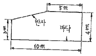
- 3m
- 3.5m
- 3.75m
- 4m
(정답률: 29%)
96. 다음 중 지방건축위원회의 심의사항이 아닌 것은?
- 다중이용건축물의 건축에 관한 사항
- 지방자치단체의 장이 발의하는 조례의 제정, 개정에 관한 사항
- 건축선의 지정에 관한 사항
- 공항지구 안에서의 건축허가에 관한 사항
(정답률: 46%)
97. 열손실방지 등의 에너지이용합리화를 위한 조치 가운데 지역별 건축물부위의 열관류율 기준을 적용하는 건축물의 부위가 아닌 것은?(관련 규정 개정전 문제로 기존정답은 1번입니다. 여기서는 1번을 누르면 정답 처리 됩니다. 자세한 내용은 해설을 참고하세요.)
- 공동주택의 복도
- 최상층에 있는 거실의 반자 또는 지붕
- 최하층에 있는 거실의 바닥
- 공동주택의 측벽
(정답률: 64%)
98. 경관지구 안에서 경관의 보호, 형성에 장애가 되는 건축물을 건축할 수 없도록 제한하는 내용과 관련이 없는 것은?
- 건축물의 건폐율
- 건축물의 최대너비
- 건축물의 색채
- 대지면적의 최소한도
(정답률: 17%)
99. 6충이상의 건축물의 연면적이 2000m2이상일 때 다음 건축물 중 승용승강기를 가장 적게 설치할 수 있는 건축물의 용도는?
- 병원
- 위락시설
- 숙박시설
- 공동주택
(정답률: 49%)
100. 다음은 노외주차장의 구조 및 설비기준이다. A, B, C에 맞는 것은?
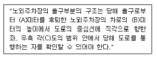
- A-1, B-1.2, C-70
- A-2, B-1.4, C-60
- A-3, B-1.6, C-60
- A-2, B-1.2, C-70
(정답률: 49%)